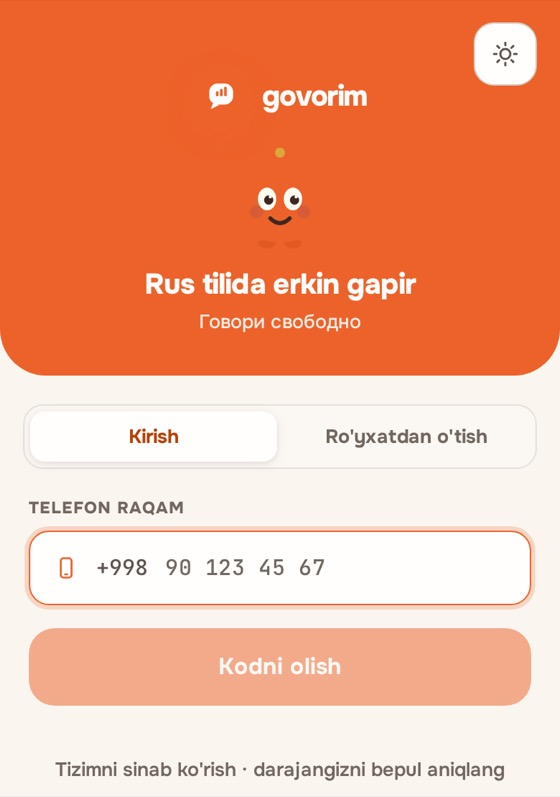

Govorim’da parol yo‘q. Har safar telefon raqamingiz va Telegram’ga keladigan 6 xonali kod bilan kirasiz.
Oldindan tayyorlab qo‘ying
Telefoningizda Telegram o‘rnatilgan bo‘lsin va u aynan shu raqamga ochilgan bo‘lsin. Kod faqat Telegram orqali keladi — SMS kelmaydi.

Kirish sahifasi
Telefon yoki kompyuterda brauzerni oching (Chrome, Safari) va manzil qatoriga govorim.uz deb yozing. Ilova yuklab olish shart emas.
Yuqorida Kirish yorlig‘i tanlangan bo‘lsin.
TELEFON RAQAM qatoriga telefon raqamingizni yozing.
Botda pastdagi START tugmasini bosing (Telegram tiliga qarab «Начать» yoki «Boshlash» deb yozilgan bo‘lishi mumkin).
Faqat birinchi marta: bot «Xavfsizlik uchun telefon raqamingizni tasdiqlang» deb yozadi. Pastdagi Raqamni yuborish tugmasini bosing, Telegram so‘rasa — ulashishni tasdiqlang.
Bot kodni yuboradi: «Tasdiqlash kodingiz: 482913». Kod 10 daqiqa amal qiladi.
Saytga qayting, 6 ta raqamni kataklarga yozing va Tasdiqlash ni bosing. Tamom — siz tizimdasiz.
Kodni tasdiqlang
Tasdiqlash kodi yuborildi: +998 90 123 45 67
Telegramni oching va raqamingizni ulang — kod o‘sha yerga keladi.
5 Telegram’da oching
TASDIQLASH KODI
482913
9 Tasdiqlash
Kodni qayta yuborish
Saytdagi kod oynasi (soddalashtirilgan)
Govorim botbot
6/start
Xavfsizlik uchun telefon raqamingizni tasdiqlang. Pastdagi tugmani bosing.
7Kontakt yuborildi
Raqamingiz ulandi. Kirish kodlari shu yerga keladi.
Govori Tasdiqlash kodingiz: 482913 (10 daqiqa amal qiladi)
Raqamni yuborish
Telegram’dagi bot (birinchi marta)
Keyingi safar osonroq
Raqamingiz botga bir marta ulangach, kod to‘g‘ridan-to‘g‘ri botga keladi — raqamni qayta yuborish shart emas.
Botga faqat o‘z raqamingizni yuboring
Telegram’ingiz boshqa raqamga ochilgan bo‘lsa, bot kod yubormaydi va «Telegram raqamingiz ilovada kiritilgan raqamga mos kelmadi» deb yozadi. Bu sizni begonalardan himoya qiladi.